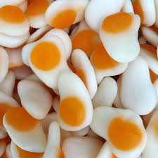
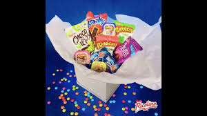
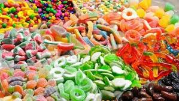

BIENVENIDOS A NUESTRO SITIO WEB GOMI LOCAS
escuentra aqui tus gustos de gran calidad, y ponte en contacto ..
encuentra en nuestro blog
“conciente a tu hijo.”
comparte con tu familia
“ Tal como lo dice su nombre aquí puedes consumir papas locas, que van servidas con gomitas ”

los mejores gomi locas

lleva tus tus gomibocadillos

dulces bocadillos